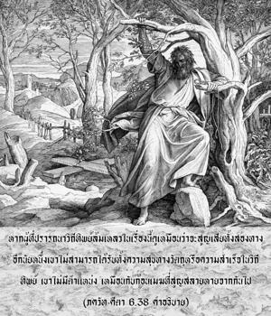

โอ้ กฺฤษฺณ ยอดนักรบ ผู้สับสนบนวิถีทิพย์ไม่ประสบผลสำเร็จทั้งในวิถีทิพย์และวิถีวัตถุจะแตกดับเสมือนดั่งก้อนเมฆที่สูญสลายหายไป โดยไม่มีตำแหน่งที่จะยืนอยู่ไม่ว่าในอาณาจักรใดใช่หรือไหม

มีอยู่สองทางในความเจริญก้าวหน้า พวกวัตถุนิยมไม่สนใจในวิถีทิพย์จึงสนใจในความก้าวหน้าทางวัตถุด้วยการพัฒนาเศรษฐกิจ หรือการส่งเสริมให้ไปอยู่บนดาวเคราะห์ที่สูงกว่าจากการปฏิบัติที่เหมาะสม เมื่อบุคคลรับเอาวิถีทิพย์มาปฏิบัติเราต้องหยุดกิจกรรมทางวัตถุทั้งปวง และถวายสิ่งที่เรียกว่าความสุขทางวัตถุทุกรูปแบบ หากผู้ที่ปรารถนาวิถีทิพย์ล้มเหลวในเรื่องนี้ดูเหมือนว่าจะสูญเสียทั้งสองทาง อีกนัยหนึ่ง เขาไม่สามารถได้รับทั้งความสุขทางวัตถุ หรือความสำเร็จในวิถีทิพย์ เขาไม่มีตำแหน่ง เหมือนกับก้อนเมฆที่สูญสลายหายจากกันไป ก้อนเมฆในท้องฟ้าบางครั้งแยกออกจากเมฆก้อนเล็ก และไปรวมตัวกับเมฆก้อนใหญ่ได้แล้วถูกลมพัดพาไป จนไม่เหลือบุคลิกของตนเองในท้องฟ้าอันกว้างใหญ่ พฺรหฺมณห์ ปถิ คือ วิถีทิพย์ซึ่งรู้แจ้งผ่านทางความรู้ที่ว่าตัวเขาคือดวงวิญญาณโดยเนื้อแท้ และเป็นละอองอณูขององค์ภควานฺ ผู้ทรงปรากฏมาในรูปของ พฺรหฺมนฺ ปรมาตฺมา และ ภควานฺ องค์ศฺรีกฺฤษฺณทรงเป็นปรากฏการณ์ที่สมบูรณ์แห่งสัจธรรมอันสมบูรณ์สูงสุด ดังนั้น ผู้ที่ศิโรราบแด่องค์ภควานฺจึงเป็นนักทิพย์นิยมที่ประสบผลสำเร็จ การบรรลุถึงเป้าหมายความรู้แจ้งแห่งชีวิตนี้ โดยผ่านทาง พฺรหฺมนฺ และ ปรมาตฺมา จะใช้เวลาหลายต่อหลายชาติ (พหูนำ ชนฺมนามฺ อนฺเต) ฉะนั้น วิถีทางสูงสุดแห่งการรู้แจ้งทิพย์ คือ ภกฺติ-โยค หรือกฺฤษฺณจิตสำนึก ซึ่งเป็นวิธีโดยตรง